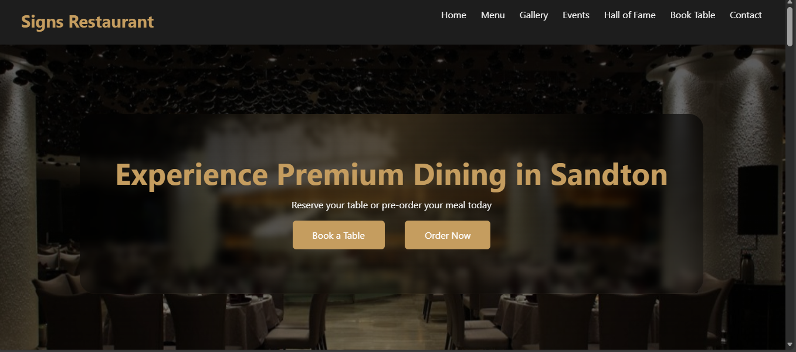
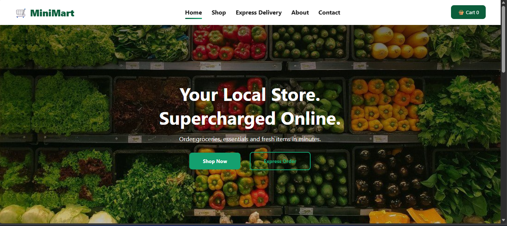

Built As Systems, Not Pages
Every WebCrate website is engineered like software. From SEO logic to lead flows, analytics, automation, and performance optimization — everything works together.
WebCrate builds intelligent web systems that generate leads, automate operations, and grow revenue. Not brochure websites. Real systems.
Every WebCrate website is engineered like software. From SEO logic to lead flows, analytics, automation, and performance optimization — everything works together.

We do not build “SEO websites”. We design business infrastructure on the web. Systems that think, adapt, and convert.

WebCrate is built for businesses that want leverage, not just an online presence.